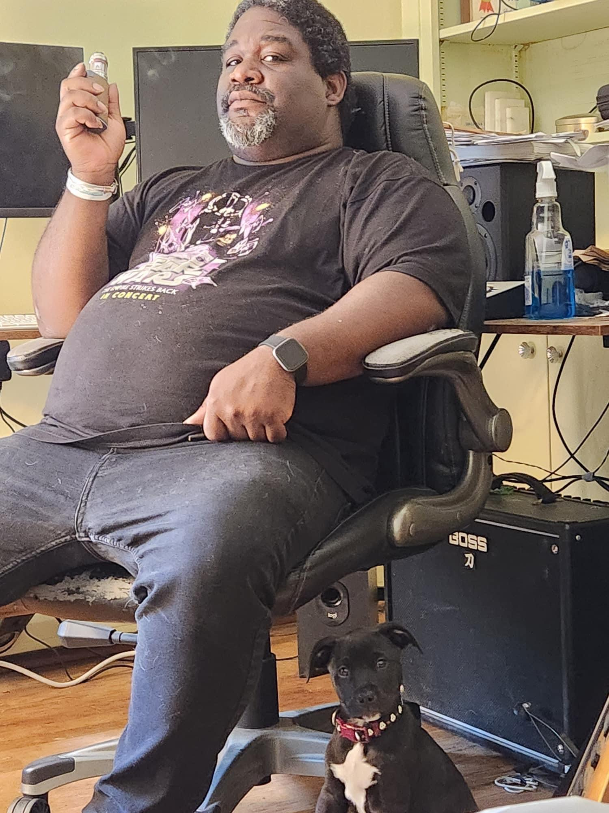

About Me
Hello, I'm a web developer passionate about creating beautiful and functional websites.
Projects
-
Group Project 1: What The Hell's For Dinner
What the Hell's for Dinner (WTHFD) is an application designed to help users create meals with the ingredients they have on hand. By inserting ingredients, users can not only see the nutritional value of those ingredients, but also find recipes online to use those ingredients. Not only that, but those recipes can also be saved and stored in local storage to return to at a later date if desired.
What The Hell's For Dinner -
Group Project 2: Timekeeper
With this website, the user is able to create a login and log daily, weekly and monthly tasks. Once a task is created it is added to the user’s profile for reference and shown on the calendar. The user is also shown a to-do list of the tasks for the day. As a user, I want to be able to quickly log and view all upcoming tasks I may have and be able to organize them by daily, weekly or monthly tasks.
Timekeeper -
More To Come!
Contact Me
Email: blaxl@mac.com
Phone: 804-651-8874
GitHub: github.com/blaxlrose